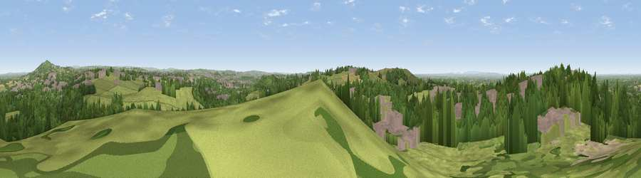

Ashenough Hill
#8168 in England · top 8% of its area beats it · near TalkeThe view, rendered

A 360° render of this exact spot computed from the terrain model, tree cover and land cover — summer colours, afternoon light, calibrated against photographs of famous viewpoints. Real trees, hedges and buildings will differ in detail.
The panorama
Grey silhouette: terrain skyline in each direction (720 bearings, Earth curvature and refraction included). Dashed green: skyline with trees (+15 m) and buildings (+8 m) as obstacles. Blue strip: how far the ground is visible on each bearing.
Where the view opens
Wedge length = distance to the farthest visible ground on that bearing (vegetation-aware). Rings at 10, 25 and 50 km.
What fills the view
41% grassland · 33% woodland · 22% built-up · 3% cropland
Angular shares of the visible panorama (visual magnitude), not map area. Landscape diversity 0.52 (0–1 Shannon).
Key numbers
More beautiful places nearby
The staircase of upgrades: each row has a higher view potential than everything closer. Driving times are estimates from straight-line distance, calibrated against real road routing — check an actual route before setting out.
| Place | Direction | Drive | Score |
|---|---|---|---|
| Viewpoint near Talke | NW · 1 km | ~3 min | 67.7 |
| Bignall Hill | SW · 2 km | ~5 min | 75.2 |
| Viewpoint near Mow Cop | NNE · 5 km | ~12 min | 80.2 |
| Viewpoint near Harthill | W · 32 km | ~50 min | 80.5 |
| Viewpoint near Little Wenlock | SSW · 48 km | ~69 min | 84.2 |
| The Wrekin | SSW · 49 km | ~70 min | 85.0 |
| Viewpoint near Little Wenlock | SSW · 49 km | ~70 min | 86.6 |
| North Hill | S · 106 km | ~131 min | 86.8 |
53.07004, -2.24957 · source: dobih hill · position refined by local search. Computed location — check access rights before visiting.